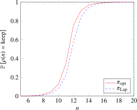

4.3.2 Partition selection
Recall the running example of Section 4.2.2.
SELECT browser_agent, COUNT(*) AS visits FROM access_logs GROUP BY browser_agent
One of the pitfalls of making such a query differentially private, identified in Section 4.2.2.0, is to select which partitions (here, browser agents) will be present in the output. In Section 4.2.2.0 and Section 4.2.3.0, we reused an insight from [230], and used Laplace-based thresholding to avoid this pitfall: we essentially count unique users associated with each partition, add Laplace noise to each count, and keep only the partitions whose counts are above a fixed threshold. The scale of the noise and the threshold value determine and .
In this section, we explore possible improvements to this partition selection method. We start by discussing prior work in more detail (Section 4.3.2.0) and introducing definitions (Section 4.3.2.0). Then, we present a partition selection mechanism for the case where each user contributes to one partition, prove its optimality (Section 4.3.2.0), and experimentally compare it to existing methods (Section 4.3.2.0). We then discuss possible extensions to cases where each user contributes to multiple partitions as well as implementation considerations (Section 4.3.2.0).
Prior work and contributions
Even though Laplace thresholding was introduced in 2009 in [230], the specific primitive of partition selection did not much attention until [179], where the authors call the generic problem differentially private set union. Each user is associated with one or several partitions, and the goal is to release as many partitions as possible while making sure that the output is differentially private.
In [179], the main use case is word and n-gram discovery in Natural Language Processing: data used in training models must not leak private information about individuals. In this context, each user potentially contributes to many elements; the sensitivity of the mechanism can be high. The authors propose two strategies applicable in this context. First, they use a weighted histogram so that if a user contributes to fewer elements than the maximum sensitivity, these elements can add more weight to the histogram count. Second, they introduce policies that determine which elements to add to the histogram depending on which histogram counts are already above the threshold. These strategies obtain significant utility improvements over the simple Laplace-based strategy.
In this work, in contrast to [179], we focus on the low-sensitivity use case: each user
contributes to exactly one partition. This different setting is common in data analysis: when the
GROUP BY operation partitions the set of users in distinct partitions, each user contributes
exactly one element to the set union. Choosing the contributions of each user is therefore not
relevant; the only question is to optimize the probability of releasing each element in the final
result. For this specific problem, we introduce an optimal approach, which maximizes this
probability.
Definitions
Throughout most of this work, we will assume that each user contributes to only one partition; and the goal is to release as many partitions as possible. In that case, each partition can be considered independently, so the problem is simple to model. Each partition has a certain number of users associated with it, and the only question is: with which probability do we release this partition? Thus, a strategy for partition selection is simply a function associating the number of users in a partition with the probability of keeping the partition.
Definition 82 (Partition selection primitive). A partition selection primitive is a function such that . The corresponding partition selection strategy counts the number of users in each partition, and releases this partition with probability .
Formally, we say that a partition selection primitive is -differentially private if the corresponding partition selection strategy , defined by:
is -differentially private.
Note that partitions associated with no users are not present at all in the input data, so the probability of releasing them must be : the definition requires .
Main result
Let us define an -DP partition selection primitive and prove that the corresponding partition selection strategy is optimal. In this context, optimal means that it maximizes the probability of releasing a partition with users, for all .
Definition 83 (Optimal partition selection primitive). A partition selection primitive is optimal for -DP if it is -DP, and if for all -DP partition selection primitives and all :
We introduce our main result, then we prove it in two steps: we first prove that the optimal partition selection primitive can be obtained recursively, then derive the closed-form formula of our main result from the recurrence relation.
Theorem 13 (General solution for ). Let and . Defining:
and , the partition selection primitive defined by:
is optimal for -DP.
These formulas assume and . We also cover the special cases where or .
Theorem 14 (Special cases for ).
- 1.
- If , partition selection is impossible: the optimal partition selection primitive for -DP is defined by for all .
- 2.
- If , the optimal partition selection primitive for -DP is defined by for all .
The rest of this section is a proof of Theorem 13.
How do we construct a partition selection primitive so that the partition is output with the highest possible probability under the constraint that is -DP? Using the definition of differential privacy, the following inequalities must hold for all .
These inequalities are not only necessary, but also sufficient for to be DP. Thus, the optimal partition selection primitive can be constructed by recurrence, maximizing each value while still satisfying the inequalities above. As we will show, only inequalities (4.1) and (4.4) above need be included in the recurrence relationship. The latter can be rearranged as:
which leads to the following recursive formulation for .
Lemma 13 (Recursive solution for ). Given and , satisfies the following recurrence relationship: , and for all :
|
| (4.5) |
Proof. Let be defined by recurrence as above; we will prove that .
First, let us show that is monotonic. Fix . It suffices to show for each argument of the min function in (4.5) is larger than .
First argument: since implies and , we have .
Second argument: we have
using that since by (4.5).
Third argument: this is immediate given (4.5) and the fact that .
It follows that .
Because is monotonic, it immediately satisfies inequalities (4.2) and (4.3), and inequalities (4.1) and (4.4) are satisfied by definition.
Since satisfies all four inequalities above, it is -DP. Its optimality follows immediately by recurrence: for each , if , it cannot be -DP, as one of the inequalities above is not satisfied: is the fastest-growing DP partition selection strategy, and therefore equal to . □
The special cases for in Theorem 14 can be immediately derived from Lemma 13: the rest of this section focuses on proving the general form in Theorem 13.
Derivation of the closed-form solution
Let us now show that the closed-form solution of Theorem 13 can be derived from the recursive solution in Lemma 13. First, we show that there is a crossover point , below which only the first term of the recurrence relation matters, and after which only the second term matters (until reaches ).
Lemma 14. Assume and . There are crossover points such that and:
|
| (4.6) |
Proof. We consider the arguments in the min statement in (4.5), substituting for :
This substitution allows us to work directly in the space of probabilities instead of restricting ourselves to the sequence . Taking the first derivative of these functions yields:
Since the derivative of is , there exists at most one crossover point such that for all , , and for all . Setting and solving for yields:
which leads to:
and finally:
Since the derivative of is , there exists at most one crossover point such that for all , , and for all . Setting and solving for yields:
From the formulas for and , it is immediate that . As such, the interval can be divided into three non-empty intervals:
- 1.
- On , is the active argument of .
- 2.
- On , is the active argument of .
- 3.
- On , is the active argument of .
The existence of the crossover points is not enough to prove the lemma: we must also show that these points are reached in a finite number of steps. For all such that , we have:
Since is bounded from below by a strictly positive constant , the sequence achieves the maximal probability 1 for finite . □
This allows us to derive the closed-form solution for and for stated in Theorem 13.
Lemma 15. Assume and . If , then . If , then denoting :
Proof. For , expanding the recurrence relation yields:
For , denoting , expanding the recurrence relation yields:
□
We can now find a closed-form solution for and for .
Lemma 16. The first crossover point is:
Proof. Using the formula for in the proof of Lemma 14, we see that whenever:
Rearranging terms, we can rewrite this inequality as:
Since is an integer, the supremum value defining is achieved by taking the floor of the right-hand side of this inequality, which concludes the proof. □
Lemma 17. The second crossover point is:
Proof. We want to find the maximal such that:
We can rewrite this condition into:
which leads to:
and finally:
since must be an integer, we take the floor of the right-hand side of this inequality to obtain the result. □
Numerical validation
Theorem 13 shows that the optimal partition selection primitive outperforms all other options. How does it compare with our previous strategy of adding Laplace noise and thresholding the result, described in Section 4.2.3.0? For simplicity, we recall this strategy in the simpler case where the sensitivity is one.
Definition 84 (Laplace-based partition selection [230]). We denote by a random variable sampled from a Laplace distribution of mean and of scale . The following partition selection strategy , called Laplace-based partition selection, is -differentially private:
We denote by the corresponding partition selection primitive:
As expected, using the optimal partition selection primitive translates to a larger probability of releasing a partition with the same user. As shown in Figure 4.18, the difference is especially large in the high-privacy regime.

To better understand the dependency on and , we also compare the midpoint obtained for both partition selection strategies : the number for which the probability of releasing a partition with users is . For Laplace-based partition selection, this is simply the threshold. As Figure 4.19 shows, the gains are especially substantial when is small, and not significant for . Figure 4.20 shows the dependency on : for a fixed , there is a constant interval between the midpoints of both strategies. Thus, the relative gains are larger for a larger , since the midpoint is also smaller.
Discussion
The approach presented here is both easy to implement and efficient. The random decision for a given partition takes a constant time to compute, thanks to the closed-form formula in Theorem 13. Counting the number of unique users per partition can be done in one pass over the data and is massively parallelizable. Furthermore, since there is a relatively small value such that the probability of keeping a partition with users is 1, the counting process can be interrupted as soon as a partition reaches users. This keeps memory usage low (in ) without requiring approximate count-distinct algorithms like HyperLogLog, for which a more complex sensitivity analysis would be needed.
Our approach could, in principle, be extended to cases where each user can contribute to partitions. Following the intuition of Lemma 13, we could list a set of recursive equations defining as a function of for . However, this recursive formulation is much more complex when is large, for multiple reasons.
- 1.
- With partitions to consider at the same time, the set of possible outcomes has cardinality : or for each partition.
- 2.
- To compute by recurrence, we must consider a large set of possible neighboring databases: each of the other contributions of the user can have anywhere from to users. Separately considering all those possibilities quickly becomes intractable.
- 3.
- For each of these possibilities, the probability can be expressed as a polynomial of degree in the values of , for . Solving these also becomes intractable as increases.
The above approach might be workable for or even , but the complexity cost is likely too high to be worth implementing. Furthermore, the recurrence-based proof of optimality of only holds assuming that each user contributes to exactly partitions in the original dataset, so strategies based on selecting which partitions to contribute to, or weighing the partition of each user if there are fewer than , cannot bring additional benefits. This case is relatively frequent for , but rarely happens for larger values of .
Thus, this work leaves two obvious open questions. Is it possible to extend to overcome the problems described above, and extend our optimal approach to larger sensitivities in a simple and efficient manner? Furthermore, is it possible to combine this primitive with existing approaches to differentially private set union [179], like weighted histograms or policy-based strategies?
In the meantime, can we simply use this primitive for the low-sensitivity use case, and adopt the approach from [179] when each user can contribute to multiple partitions? If scalability is a hard requirement, then the answer is not straightforward.
- The policy-based approaches described in [179] require the values of each user one after the other, and compare them with the histogram previously built from all previous users. The linearity prevents us from implementing the algorithm in a massively parallel fashion, and the full histogram must fit in memory. Both are significant obstacles to scalability; designing alternative algorithms with better scalability properties is left as an open question.
- However, part of their core insights can still be used. For most values of and , Gaussian noise gives better results for than naively splitting the budget across contributions and using our partition selection primitive, as shown in Figure 4.21. Furthermore, for users who contribute fewer values than , giving these contributions more weight in the histogram is also possible.